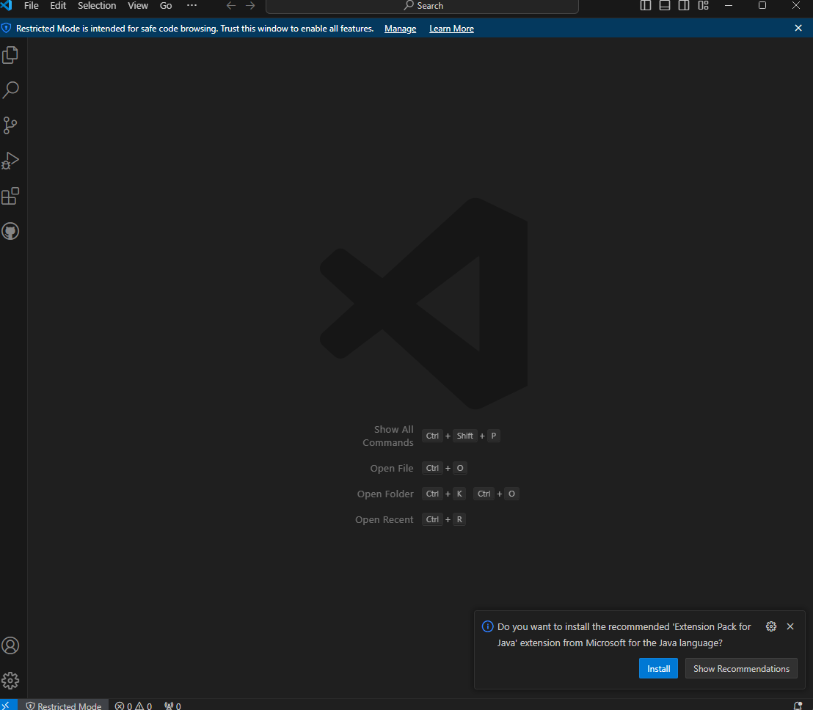
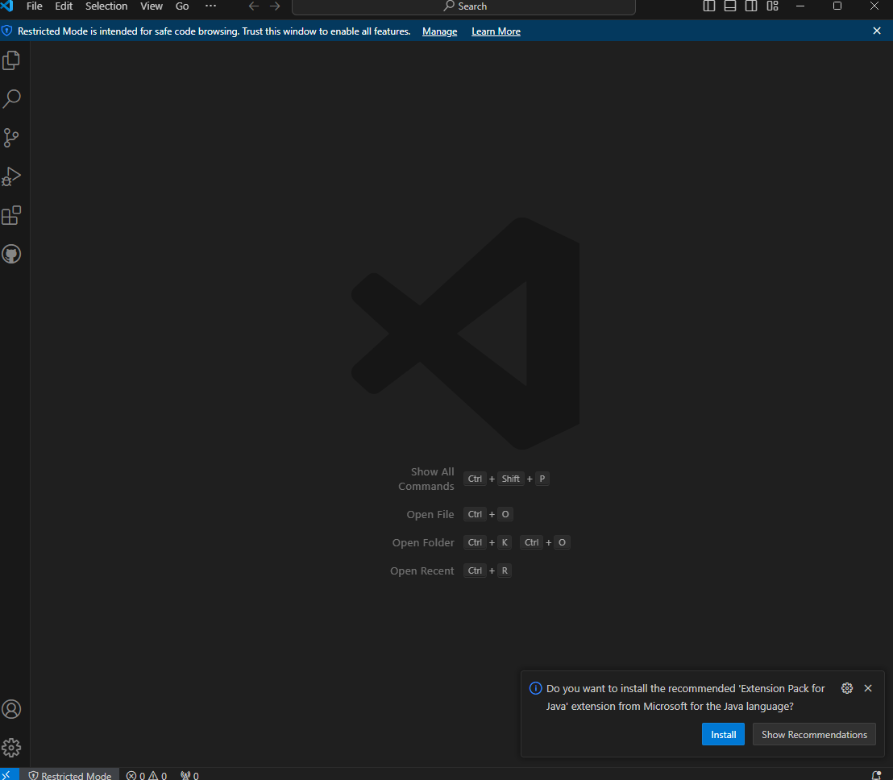

- En primer lugar vamos al sitio oficial de Visual Studio Code :
- Presionamos en "Descarga gratuita" .
- Pulsamos en "Descarga gratuita" y elegimos una de las opciones de abajo (depende de tu dispositivo y tus necesidades) :
- Cuando haya terminado, deberá completar la configuración del programa :
- Leer y aceptar el acuerdo :
- Haga clic en instalar:

 

- Visita el sitio oficial de netbean :
- Cuando haga clic en descargar, el sitio le brindará las diferentes versiones del programa :
- Elija una versión (depende de su dispositivo y necesidades) y haga clic en descargar :

- Espere hasta que esté terminado
- Cuando haya terminado, deberá completar la configuración del programa haga clic en next :
- Aceptar y hacer clic en next :
- Aquí te muestra la carpeta en la que quieres instalar Apache :

- Cuando termines haz clic en instalar :

- New Project: Crea un proyecto nuevo en lenguajes como Java o PHP.
- Open Project: Abre un proyecto existente.
- New File: Genera un archivo nuevo, como clases o interfaces.
- Open File: Abre archivos existentes en el proyecto.
- Go to File: Busca rápidamente archivos dentro del proyecto.
- Show Dashboard: Muestra un panel con información sobre tus proyectos.


- Visita el sitio oficial de intellij idea y haga clic en download (descargar) :

- Haga clic en instalar y espere :

- Espera hasta que termine :

- Puedes elegir el destino de tu carpeta cuando lo hayas hecho, haz clic en next :
Elige una de las opciones depende de ti y tus necesidades :
- Acceso directo en el escritorio: Crea un ícono en el escritorio para abrir
IntelliJ rápidamente.
- Actualizar PATH: Permite ejecutar IntelliJ desde la terminal con comandos como
idea.
- Menú contextual: Agrega la opción "Abrir carpeta como proyecto" al hacer clic
derecho en carpetas.
- Asociaciones de archivos: Abre automáticamente archivos como .java, .kt y .gradle
con IntelliJ.
- Cuando termines haz clic en next :
- Aquí puedes elegir la carpeta donde quieres colocar el acceso directo del programa elige una de las opciones a continuación Cuando termines haz clic en install :

- Y clicaremos sobre "Install", entonces la instalacion comenzara.
Características Comunes:
Características Específicas:
Ventajas:
Desventajas:
Dentro del menu de configuracion, en el apartado de "Personalizar o Customize" podemos modificar tanto la apariencia de la interfaz como el tamaño de la fuente de letra:


También, si vamos al apartado de "All settings o Más Ajustes" podemos extender la configuración como por ejemplo usar fuente personalizadas, zoom, opciones de la interfaz, una imagende fondo, entre otros...

Dentro del menu de los "plugins" podrá observar una cantidad enorme de plugins para instalar, una vez elegido el que quiere instalar, simplemente seleccione dicho plugin y hago click en el boton de "Instalar", comenzará un proceso de instalacion y después podrá comprobar sus extensiones instaladas

En el apartado de "Installed o Instalados" podrá comprobar sus extensiones instaladas en la aplicación, también podrá activarlas o desactivarlas a su gusto. Ahí, también podrá actualizar las extensiones si usted lo desea, haciendo click en el botón azul "Update/Actualizar".

Si desea desinstalar un plugin o extensión, simplemente vaya en menu de los plugins instalados, seleccione el plugin que desea desinstalar y haga click en la sección desplegable "Deshabilitar" en el menú de la derecha, y después seleccione que opción que aparecerá después, que será "Desinstalar", después de eso ya tendrá su extensión desintalada de su software.

Dentro de los ajustes, haciendo click en el icono del engranaje, podrá observar un amplio menú lleno de varias opciones, la que nos interesa es la opción de "Apariencia y comportamiento", una vez dentro irá a la opción de "Ajustes del sistema" y por último a la opción de "Actualizaciones". Allí podrá modificar como quiere que se comporten las actualizaciones de la aplicación, pudiendo activar las actualizaciones automáticas o manuales.

Para ofrecer una mejor experiencia usando IntelliJ IDEA, ¡aquí le proporcionamos varios atajos de teclado para que pueda usar su software de una manera más cómoda y flexible!
Atajos Básicos:
Atajos Intermedios:

- Visita el sitio oficial de intellij idea y haga clic en download (descargar) :


Haga clic en instalar.
- Puede editar antes de la instalación según sus necesidades :

- Leer y accepter :


-Para importar o exportar un proyecto de Netbeans a Eclipse presionamos en Archivo, encontraremos Importar o Exportar, elija uno que se ajuste a sus necesidades :

-En este caso explicaremos el proceso de exportación (de netbeans a eclipse) :
Necesitamos comprimir el archivo, haga clic en (to zip)
-Elige el archivo que necesitas exportar y haga clic en export :
Elegimos el apartado llamado "Projects from folder or Archive":
-Elegimos la carpeta que nos dejo una vez descomprimido el .ZIP.:

-Cuando elijas el directorio haz clic en finalizar y el proyecto se abrirá en eclipse :


-Para instalar un complemento (plugin) en NetBeans, vaya a tools :
-Buscar plugins y haga clic en él:
-Una vez que hagas clic en él aparecerá esta página.
donde podrás encontrar todos los plugins elige el que necesites .
-Seleccione el complemento que necesita, en este caso elegiré por ejemplo GitHub issues support :
Haga clic en instalar
-Haga clic en next:
-Lea y acepte y luego haga clic en instalar:
-Para uninstalar un complemento (plugin) en NetBeans:
Siga los mismos pasos, vaya a tools, luego a plugins y busque installed Haz clic en él installed
-Encontrarás todos los plugins instalados:
selecciona el que deseas desinstalar.
-Encontrarás todos los plugins instalados:
selecciona el que deseas desinstalar.
-Haga clic en uninstall :
Después de desinstalar el plugin, debe reiniciar Netbeans.haga clic en finish .
Aqui tenemos algunos de los atajos que podemos usar en el IDE NetBeans.
-Abrir archivo: Ctrl + O
-Guardar: Ctrl + S
-Guardar todo: Ctrl + Shift + S
-Cerrar pestaña actual: Ctrl + W
-Cerrar todas las pestañas: Ctrl + Shift + W
-Salir: Alt + F4
-Cambiar entre pestañas: Ctrl + Tab
-Ir a archivo: Alt + Shift + O
-Ir a tipo (clase, interfaz, etc.): Ctrl + O
-Ir a línea específica: Ctrl + G
-Navegar hacia atrás: Alt + Flecha izquierda
-Navegar hacia adelante: Alt + Flecha derecha
-Buscar usos (referencias): Alt + F7
-Abrir declaración: Ctrl + Click o Ctrl + B
-Documentación rápida: Ctrl + Shift + Espacio
-Para personalizar la visualización en NetBeans presione en tools:
-Buscamos "Appearance", y hacemos clic en él.
Aquí hay una definición rápida de cada uno:
-Document Tabs (Pestañas de Documentos):
Gestiona cómo se muestran y funcionan las pestañas de los archivos abiertos en el editor.
- Windows (Ventanas):
Controla el comportamiento y la disposición de los paneles y ventanas del IDE.
-Look and Feel (Apariencia y Comportamiento):
Define el estilo visual general del IDE, incluyendo temas (claro/oscuro).
-FlatLaf:
Un motor moderno de diseño plano para NetBeans, que ofrece un aspecto limpio.
-Ventajas: Características como herramientas de depuración, autocompletado de código, resaltado de sintaxis y control de versiones integrado.
-Desventajas: Uso de recursos, curva de aprendizaje empinada o funcionalidad limitada para ciertos lenguajes.
- Editor de código: Resaltado de sintaxis, autocompletado y sugerencias.
- Depurador: Herramienta para identificar y corregir errores.
- Gestión de proyectos: Organización de código y recursos.
- Control de versiones: Integración con herramientas como Git.
- Compilador/Intérprete: Para compilar o interpretar el código.
- Soporte para pruebas: Herramientas para pruebas unitarias.
- Visual Studio: Para .NET, C#, F#, C++, Python y JavaScript. Soporta desarrollo web y servicios en la
nube.
- NetBeans: Principalmente para Java, con soporte para PHP, C++ y HTML5. Incluye herramientas para
Android.
- Eclipse: Usado para Java, C++, Python y PHP. Famoso por su integración con Maven y Jenkins.
- IntelliJ IDEA: Optimizado para Java y JVM, con herramientas para desarrollo web y bases de datos.
-Creamos un proyecto con una class, en mi caso un "Hola Mundo".
-Pero antes veremos el contenido que tiene nuestra carpeta del proyecto.
-Entonces una vez visto clicaremos sobre el martillo, el cual hara el "Build".
-Si nos vamos denuevo a la carpeta veremos que ha creado mas carpetas con archivos, y entraremos a la carpeta llamada "dist".
-Y veremos que este a creado un archivo .jar, este es un archivo comprimido que agrupa todas las clases compiladas, recursos y bibliotecas necesarias para ejecutar la aplicación Java.
-Se utiliza para distribuir y ejecutar aplicaciones de manera más eficiente, permitiendo su ejecución en cualquier plataforma con Java instalado.
- Para instalar los plugins iremos al desplegable llamado "Help", y luego clicaremos en "Eclipse Marketplace".

- Una vez dentro elegiremos el plugin que deseemos, y clicaremos en el boton de "Install".
- Una vez terminada la instalacion, saltara una ventana con un mensaje para aceptar los terminos.
- Aqui nos pedira permiso para confiar en el plugin que instalaremos, entonces seleccionamos y clicamos en confiar
- Aqui nos pedira permiso para confiar en el contenido desconocido.
- Y por ultimo nos pedira que reiniciemos el IDE para aplicar los cambios.
Aqui tenemos algunos de los atajos que podemos usar en el IDE Eclipse.
Ctrl + Espacio: Autocompletado de código.
Ctrl + Shift + R: Abrir recurso (archivo) por nombre.
Ctrl + O: Mostrar el esquema del archivo actual (métodos y variables).
Ctrl + H: Abrir el diálogo de búsqueda.
Ctrl + Q: Ir a la última ubicación editada.
Alt + ← / →: Navegar hacia atrás/adelante en el historial de navegación.
Ctrl + N: Crear un nuevo archivo o proyecto.
Ctrl + Shift + S: Guardar todos los archivos abiertos.
Ctrl + W: Cerrar la pestaña activa.
Ctrl + Shift + F: Formatear código según la configuración del proyecto.
Ctrl + D: Eliminar la línea actual.
Alt + Shift + ↑ / ↓: Mover líneas hacia arriba o abajo.
Ctrl + /: Comentar o descomentar la línea seleccionada.
Ctrl + Shift + C: Alternar comentario de bloque.
Alt + Shift + R: Renombrar una variable, método o clase (Refactorización).
Ctrl + 1: Acceder a las sugerencias rápidas.
Para cambiar la apariencia entraremos al desplegable llamado "Window", en el iremos a "Preferences".
- Una vez dentro clicaremos en "General", y luego en "Color and Fonts".
- Como podemos ver nos saldran cuadrados con colores y unas descripciones, pasa lo mismo con las fuentes, en cada apartado podemos modificar los colores y las fuentes de todo el IDE Eclipse.
- Si nos devolvemos atras y clicamos en "Appearance", podemos cambiar el Theme del IDE, en mi caso lo cambie a "Classic"
- Una vez clicado nos pedira aplicar reiniciar la aplicacion.
- Y veremos que los cambios se han aplicado con exito.
Eclipse dispone de varias ventajas en comparación a otros IDE
No obstante, al igual que tenemos ventajas tendremos desventajas.
Todos los IDE disponen de caracteristicas en común que nos permiten una mayor adaptación en caso de hacer uso de más de uno.
Aún cuando disponemos de caracteristicas comúnes para todos los IDE, Eclipse tiene caracteristicas propias.
Tendremos que dirigirnos al apartado "Help" y seleccionar la opción "Check for Updates"

Veremos que se nos abre una ventana con las actualizaciones disponibles

Apartado "Windows" en la parte superior y seleccionamos la opción "Preferences"

Por último, en el menú de la izquierda, expandiremos la opción "Install / update " y seleccionaremos "Automatic Update"

-Para instalar una extensión en Visual Studio Code, haz clic en el icono de extensiones en la barra lateral izquierda o usa el atajo Ctrl + Shift + X:
-Busca la extensión que necesites en la barra de búsqueda:
-Una vez localizada, haz clic en "Instalar" para añadirla a tu editor:
-Después de instalar la extensión, estará lista para usarse:
-Para desinstalar una extensión en Visual Studio Code:
Ve nuevamente al icono de extensiones (Ctrl + Shift + X), selecciona la extensión instalada que desees
eliminar y haz clic en "Desinstalar".
Aquí tienes algunos de los atajos que puedes usar en Visual Studio Code:
-Abrir archivo: Ctrl + O
-Guardar: Ctrl + S
-Guardar todo: Ctrl + K, S
-Cerrar pestaña actual: Ctrl + W
-Cerrar todas las pestañas: Ctrl + K, W
-Salir: Alt + F4
-Cambiar entre pestañas: Ctrl + Tab
-Ir a archivo: Ctrl + P
-Ir a símbolo en archivo: Ctrl + Shift + O
-Ir a línea específica: Ctrl + G
-Navegar hacia atrás: Alt + Flecha izquierda
-Navegar hacia adelante: Alt + Flecha derecha
-Buscar usos (referencias): Shift + F12
-Ir a definición: F12
-Documentación rápida: Ctrl + K, I
-Para cambiar la apariencia de Visual Studio Code, haz clic en el icono de ajustes en la esquina inferior izquierda, luego selecciona Temas de Color:
-Se abrirá una lista de temas instalados. Usa las teclas de flecha para previsualizar cada tema y elige el que prefieras:
-Si quieres instalar más temas, ve a la sección de Extensiones (Ctrl + Shift + X), busca "Themes" o el tema que desees y haz clic en Instalar:
-Para cambiar el tamaño de fuente o la interfaz, ve a Archivo > Preferencias > Configuración, y busca "Font Size" o "Workbench Appearance":
-Con estas configuraciones puedes personalizar completamente el aspecto de Visual Studio Code según tus necesidades.
Ventajas de los IDE:
Inconvenientes de los IDE:
Los IDE (Entornos de Desarrollo Integrados) tienen una serie de características comunes que los hacen herramientas eficaces para el desarrollo de software:
Visual Studio Code, como IDE, tiene varias características específicas:
-Para verificar si hay actualizaciones disponibles de Visual Studio Code, ve al menú superior y selecciona **Ayuda > Buscar actualizaciones**:
-Si hay una actualización disponible, aparecerá una notificación en la parte inferior de la ventana, pero en este caso no encontro ninguna nueva:
-En caso de tener updates después de reiniciar VSCode, se completará la instalación de la nueva versión y el editor estará actualizado.
-Para actualizar las extensiones en Visual Studio Code, abre la vista de **Extensiones** haciendo clic en el icono de **Extensiones** en la barra lateral izquierda o usando el atajo **Ctrl + Shift + X**:
-Si hay actualizaciones disponibles, verás la opción **"Actualizar todo"** en la parte superior de la lista de extensiones:
-Todas estan actualizadas en mi caso: